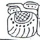
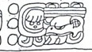
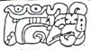
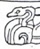
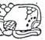
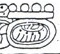
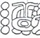
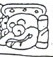
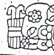

| A1 | Distance Number: 1 Winals, 11 K'ins | |
| B1a | Distance Number continued: 5 Tuns | |
| B1b | Star-over-shell "war befell" | |
| A2a |  | Dragon-Ha' "Dragon Water" |
| A2b | i u-ti "and then it happened" | |
| B2 |  | Calendar Round: 3 Ix 16 Muwan (should be 2 Ix, 17 Muwan) |
| C1 |  | Star-over-shell Puli "war befell Puli" |
| D1a |  | Lok'-yi "he escaped" |
| D1b | |
Nuun Ujol Chaak |
| C2a | Tab-yi "he went up" | |
| C2b |  | Pa-??-tun |
| D2a | Distance Number: 7 days | |
| D2b |  | Tzolk'in: 9 Imix |
| E1a |  | Haab: 4 Pax |
| E1b | hu-li "he arrived" | |
| F1a |  |
Dragon-Ha' "at Dragon Water" |
| F1b | B'alah Chan | |
| E2a | K'awiil | |
| E2b |  | u chan"captor of" |
| F2a |  | Tah Mo' "Torch Macaw" |
| F2b | K'uhul Mutul Ahaw"Holy Lord of Mutul" |